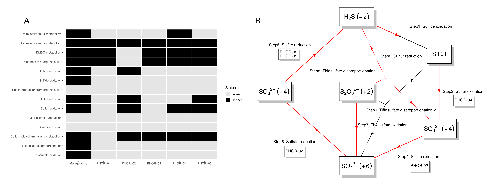

		<!-- Main -->
			<article id="main">
					
				<!-- One -->
					<section class="wrapper style4 container">
					
						<!-- Content -->
							<div class="content">
								<section>
										<header>
										<h3><strong>Phoronid microbiomes
</strong></h3> </header>


<div class="row">


<div class="6u">
<p> Phoronids are a tiny (~12 species) phyla of marine invertebrates that live inside protective chitinous tubes in the sediment. We opportunistically sampled the phoronid, <i>Phoronopsis harmeri</i>, found inside and outside of seagrass beds to investigate their microbiome using high throughput sequencing of the 16S rRNA gene and metagenomics. </p>

</div>

	<div class="6u">
		<a class="image featured special"></a>
	</div>
</div>

<p>We found that the phoronid microbiome was dominated by members of Campylobacterales, Desulfobulbales, and Desulfobacterales. Although there were similarities between the abundant taxa in tubes, phoronids, and surrounding sediment, each had distinct community structure. Microbiomes of tubes and phoronids were less diverse than those in the sediment. These findings suggest that phoronid and tube communities may be selected from local sediment microbiomes. Metagenomic analysis generated low-quality MAGs of abundant taxa and preliminary evidence that these taxa are likely involved in sulfur cycling pathways. </p>


<a class="image featured special">
		<p> Predicted sulfur metabolism profiles. (A) Heatmap showing the presence of sulfur cycling genes in the metagenomic coassembly or individual MAGs. (B) Summary of sulfur cycling metabolisms at the community level. Red arrows indicate steps with the necessary genes present, while black arrows indicate missing steps. Each step lists the specific MAG(s) with the required genes. 

</p>
		</a>
		
		
												
									
								
							
								</section>
							</div>
							
							
		<p>
<b>Related publications:</b>
<ul class="default">

	<li><b>Ettinger CL</b>, & Eisen JA. 2024. Phoronids and their tubes harbor distinct microbiomes compared to surrounding sediment. Preprint available on bioRxiv. DOI:<a href="https://doi.org/10.1101/2024.05.28.596327"> 10.1101/2024.05.28.596327</a>  </li>

</ul>	
</p>
		

					</section>
					
					
					
					
						
										
								
					
			</article>
